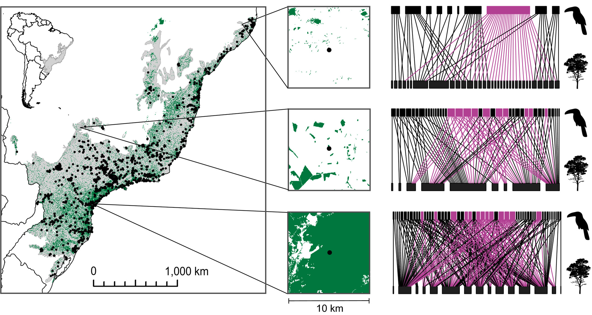

Fragmented tropical forests lose mutualistic plant-animal interactions
Avaliamos como a fragmentaçãoa influencia as interações par-a-par entre 407 espécies de dispersores de sementes e 1424 espécies de árvores em um hotspot de biodiversidade altamente fragmentado

Resumo
Aim: Forest fragmentation is among the principal causes of global biodiversity loss, yet how it affects mutualistic interactions between plants and animals at large spatial scale is poorly understood. In particular, tropical forest regeneration depends on due to forest fragmentation and defaunation. Here, we assess how fragmentation influences the pairwise interactions between 407 seed disperser and 1,424 tree species in a highly fragmented biodiversity hotspot.
Location: Atlantic Forest, South America.
Methods: We predicted interaction networks in 912 sites covering the entire biome by combining verified interaction data with co-occurrence probabilities obtained from a spatially explicit joint species distribution model. We identified keystone seed dispersers by computing a species-specific keystone index and by selecting those species belonging to the top 5% quantile.
Results: We show that forest fragmentation affects seed dispersal interactions negatively, and the decreased area of functionally connected forest, rather than increased edge effects, is the main driver behind the loss of interactions. Both the seed disperser availability for the local tree communities and in particular the proportion of interactions provided by keystone seed dispersers decline with increasing degree of fragmentation. Importantly, just 21 keystone species provided >40% of all interactions. The numbers of interactions provided by keystone and non-keystone species, however, were equally negatively affected by fragmentation, suggesting that seed dispersal interactions may not be rewired under strong fragmentation effects.
Conclusions: We highlight the importance of understanding the fragmentation-induced compositional shifts in seed disperser communities as they may lead to lagged and multiplicative effects on tree communities. Our results illustrate the utility of model-based prediction of interaction networks as well as model-based identification of keystone species as a tool for prioritizing conservation efforts. Similar modelling approaches could be applied to other threatened ecosystems and interaction types globally.
Citação
@article{marjakangas_etal_2020,
title = {Fragmented tropical forests lose mutualistic plant–animal interactions},
volume = {26},
issn = {1366-9516, 1472-4642},
url = {https://onlinelibrary.wiley.com/doi/10.1111/ddi.13010},
doi = {10.1111/ddi.13010},
language = {en},
number = {2},
urldate = {2022-06-08},
journal = {Diversity and Distributions},
author = {Marjakangas, Emma‐Liina and Abrego, Nerea and Grøtan, Vidar and Lima, Renato A. F. and Bello, Carolina and Bovendorp, Ricardo S. and Culot, Laurence and Hasui, Érica and Lima, Fernando and Muylaert, Renata Lara and Niebuhr, Bernardo Brandão and Oliveira, Alexandre A. and Pereira, Lucas Augusto and Prado, Paulo I. and Stevens, Richard D. and Vancine, Maurício Humberto and Ribeiro, Milton Cezar and Galetti, Mauro and Ovaskainen, Otso},
editor = {Knop, Eva},
month = feb,
year = {2020},
pages = {154--168},
}
- Postado em:
- 1 February 2020
- Comprimento:
- 2 minutos de leitura, 411 palavras
- Categorias:
- Artigo
- Veja também:
- Invasive wild boar’s distribution overlap with threatened native ungulate in Patagonia
- Host diversity outperforms climate as a global driver of symbiont diversity in the bird‐feather mite system
- Environmental niche and functional role similarity between invasive and native palms in the Atlantic Forest